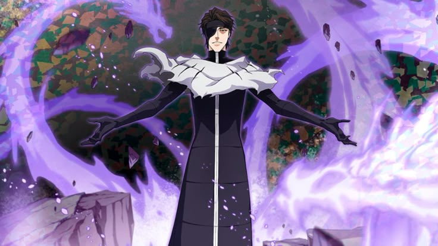

Nama saya Aizen Sousuke, mantan Kapten Divisi 5 di Gotei 13. Saya dikenal sebagai sosok yang tenang, penuh perhitungan, dan memiliki ambisi besar untuk melampaui batas kekuatan Shinigami. Dengan kecerdasan dan strategi, saya mampu memanipulasi keadaan demi mencapai tujuan saya. Bagi saya, kekuatan sejati bukan hanya dari pedang, tetapi juga dari pikiran dan kemampuan mengendalikan situasi.
| Tahun | Institusi | Posisi / Bidang |
|---|---|---|
| Tidak Diketahui | Gotei 13 | Kapten Divisi 5 |
| Tidak Diketahui | Espada | Kapten Espada |
| Sekarang | - | Last Hope Soul Society |
Silakan isi formulir di bawah ini untuk mengirimkan pesan atau kerja sama menjadi sekutu :